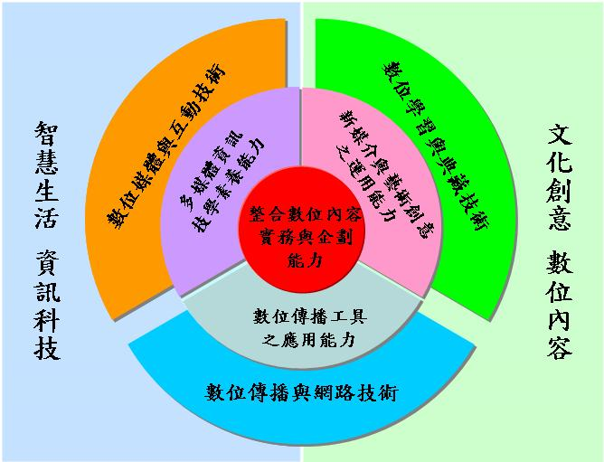

為配合與符應本校之教育目標、發展目標與發展策略及資訊科技學院之教育宗旨、發展目標與教育 目標，加上考量政策、國內外趨勢與系所發展等層面，另外依據本系之願景，審慎訂定本系之發展 目標與特色，具體訂出以「數位傳播與網路技術」、「數位媒體與互動技術」與「數位學習與典藏 技術」為本系重點發展技術，並符應資訊科技學院之發展目標「迎接數位生活，開創資訊人生」， 以「智慧生活資訊科技，文化創意數位內容」為本系之重點發展特色，主要目的「以智慧生活資訊 科技技術強化文化創意產業之競爭力」、「以智慧生活資訊科技技術強化文化創意產業之競爭力」 ，如下圖所示。

本系系發展重點特色依三大技術專長領域分類如下：
系重點發展特色成效顯著：
經過幾年的努力，本系不但積極參與學校的各項整合型計畫，在數位生活科技之互動多媒體相關技術中鑽研， 其中資訊科技研發中心獲得教育部補助重點特色計畫案(u-Home)三年共4,200萬元的研究經費，本系共5位老師 也參與計畫之執行，已經具有相當不錯的成果，不但在98年5月5日獲得台視、中視、華視、TVBS等各大電視 媒體以午間新聞、或者是專題報導u-Home的研究成果，更在98年8月6 ~ 10日前往台北南港展覽館參加2009TIROS 台北國際機器人大展，展出u-Home的研究成果。98年10月也受到科技生活等雜誌的報導，這些都可以證明本 系在重點特色的發展上已經達到具體成效。